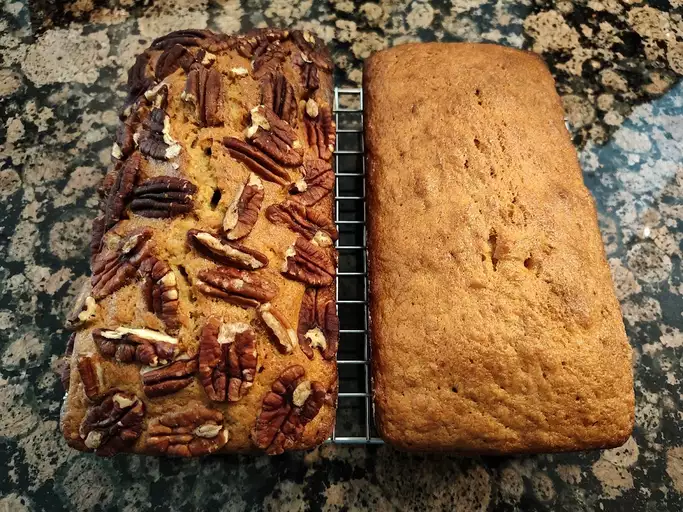

Banana bread

Description
Grandma's banana bread recipe is a number one family favorite! It's been
handed down from generation to generation. You can get creative by adding
nuts, raisins, or anything else that you want to throw in the batter.
Ingredients
- 1 ½ cups white sugar
- ½ cup butter, softened
- 3 bananas, mashed
- 2 large eggs
- 2 cups all-purpose flour
- ⅓ cup sour milk
- 1 teaspoon vanilla extract
- ½ teaspoon baking soda
- ¼ teaspoon salt
Steps
-
Preheat the oven to 350 degrees F (175 degrees C). Lightly grease an
8x4-inch loaf pan.
-
Combine sugar, butter, bananas, and eggs in a large mixing bowl. Add in
flour, milk, vanilla, baking soda, and salt; beat well. Pour batter into
the prepared pan.
-
Bake in the preheated oven until a toothpick inserted into the center of
the loaf comes out clean, about 60 minutes.
Home